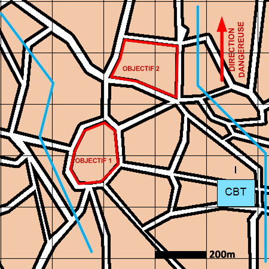

NIVEAU :Automate
ARME :Melee
MISSION :Reconnaitre
Objectif principal
- Renseigner
- Détruire / Neutraliser
Modalités d'exécution
-
Le fuseau est partagé en autant de sous-fuseaux que de pions qui reconnaissent ;
-
Les unités de reconnaissance se déplacent et reconnaissent les objectifs dans leur fuseau ;
-
En fin de reconnaissance le dispositif est aligné au niveau de l'objectif le plus eloigné ;
-
Les pions GEN en appui mobilité ;
-
Les unités de mêlée restantes et les appuis feu sont en appui du premier échelon ;
-
Le PC suit le reste du dispositif.
Schéma de modélisation

Paramètres obligatoires
Fuseau : Zone de responsabilité.
Direction Dangereuse : Orientation privilégiée des capteurs.
Objectifs
Points :
Points à reconnaître.
Zones :
Zones à reconnaître.
Blocs Urbains :
Blocs Urbains à reconnaître.
Paramètres optionnels
Nombre d'échelons (2 par défaut)
Ligne(s) de coordination [LC]
Ligne de début et fin de mission [LDM/LFM]